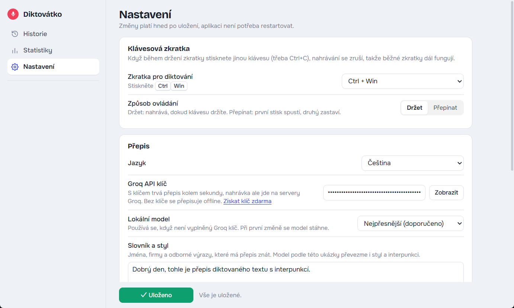
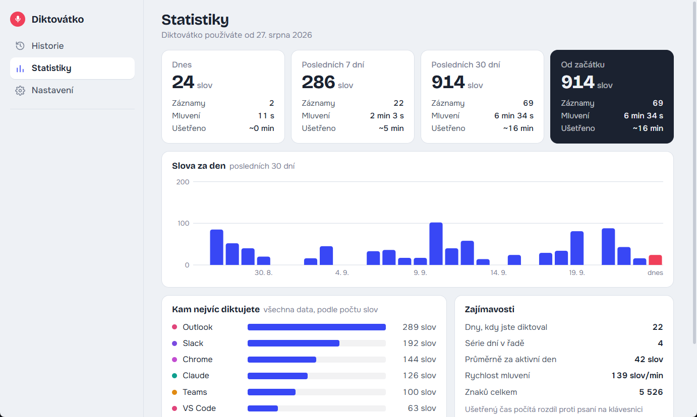

Step-by-step guide
From installation to your first dictated sentence. You don't need any technical skills, just follow the steps one by one.
In short
- What it is: hold a key, speak, let go, and the text appears where your cursor is. Free, works in any app.
- Installation: Python from python.org, then
install.batandstart.batinstall.commandandstart.command. About 10 minutes. - Extra on Mac: allow Terminal to use Microphone, Accessibility and Input Monitoring.
- Fast transcription: everyone creates their own free Groq key and pastes it into Settings. Without a key, transcription works offline, just more slowly.
- Hotkey: Ctrl + WinCtrl + ⌘ Cmd by default, you can change it in Settings.
- History and statistics: everything stays on your computer only. You can search, copy and export it.
The Mac version is new. We're still polishing it. If something doesn't work for you, let us know via GitHub Issues.
1What you need
- A computer with Windows 10 or 11.
- A Mac with macOS 12 Monterey or later (Apple silicon or Intel).
- A microphone: built into your laptop, in your headset, or a separate one.
- Python: a free program that Diktovátko runs on. The next step shows how to install it.
- An internet connection for the installation. For dictating, only if you use fast transcription through Groq.
- About 10 minutes of your time.
2Installing Python
If you already have Python, skip this step.
- Open python.org/downloads and click the yellow Download Python button.
- Run the downloaded file.
- Important: at the bottom of the first installer window, tick Add python.exe to PATH.
- Click Install Now and wait for the installation to finish. Then close the window.
- Open python.org/downloads/macos and download the latest macOS 64-bit universal2 installer.
- Open the downloaded
.pkgfile and go through the installer with the Continue and Install buttons. - At the end, the Python folder opens. Double-click Install Certificates.command in it so that downloads from the internet work.
3Downloading and installing Diktovátko
- Download Diktovátko. It's the same ZIP file for Windows and Mac:
- Unzip it into a folder where it can stay for good, for example Documents/Diktovatko. Don't leave it in your Downloads folder, where it might get deleted later.
- In the folder, double-click
install.bat. A black window opens and starts downloading the required components, which takes 1–3 minutes. At the end you'll see a message that it's done. - In the folder, double-click
install.command. Terminal (a window with text) opens and the installation starts, which takes 1–3 minutes. At the end you'll see a message that it's done, and you can close the window.
If your Mac refuses to open the file
Your Mac may say the file can't be opened because it is from an unidentified developer or that it could not be verified. That's because Diktovátko isn't from the App Store. Here's what to do:
- In the dialog, click Done or OK, not “Move to Trash”.
- Open System Settings → Privacy & Security and scroll all the way down to the Security section.
- Next to the message about
install.command, click Open Anyway and confirm with your password or Touch ID. - Double-click
install.commandagain and choose Open when asked.
On older macOS (12–14), you can instead right-click the file (or Control-click it), choose Open and then Open again when asked. Do the same for start.command if your Mac asks.
Backup method using Terminal, if none of that helps:
- Open the Terminal app (⌘+Space, type “Terminal”, press Enter).
- Type
bashfollowed by a space, but don't press Enter yet. - Drag the
install.commandfile into the Terminal window with your mouse, and its path is filled in. - Press Enter. You can run
start.commandthe same way.
If Windows shows a blue Windows protected your PC window, click More info and then Run anyway.
4First launch
- Double-click
start.bat. - A microphone icon appears in the bottom right next to the clock. If you don't see it, click the ^ arrow next to the clock and the icon will be there. You can drag it straight onto the taskbar so it's always visible.
- A short beep means Diktovátko is ready.
- Double-click
start.command. Terminal opens briefly with a message that Diktovátko is running. You can close that window and Diktovátko keeps running. - A microphone icon appears in the menu bar at the top right (near the clock, Wi-Fi and battery).
- Your Mac asks for access to the microphone and to Accessibility. Allow both. Then turn on all the permissions as described below and restart Diktovátko once.
Can't see the icon in the menu bar?
On MacBooks with a notch, icons that don't fit in the menu bar get hidden behind the notch. Try quitting some other menu bar apps, or hold ⌘ and drag less important icons out of the menu bar. Diktovátko still works even if you can't see the icon: the hotkey and the indicator keep working.
Permissions on Mac
macOS protects the microphone and keyboard, so you need to allow Diktovátko access manually. The permissions go to the app you use to start Diktovátko, which is Terminal.
| Item | What it's for | Required? |
|---|---|---|
| Microphone | recording your voice | yes |
| Accessibility | pasting text where your cursor is | yes |
| Input Monitoring | detecting that you're holding the hotkey | yes |
| Screen Recording | window titles in the history (without it, only the app name is saved) | no |
- Open → System Settings → Privacy & Security. On macOS 12 Monterey it's → System Preferences → Security & Privacy → Privacy.
- On the right, click Microphone and turn on the switch next to Terminal.
- Go back, click Accessibility and turn on Terminal. If it's not in the list, click + at the bottom, choose Applications → Utilities → Terminal in the window and click Open.
- Turn on Terminal in Input Monitoring the same way.
- If you want to see window titles in the history, also turn on Terminal in Screen Recording. Optional.
- If your Mac asks whether to quit and reopen Terminal, choose Quit & Reopen.
- Restart Diktovátko: menu bar icon → Quit, then double-click
start.commandagain.
Start at login (an option in Settings) starts Diktovátko without Terminal, directly through Python. So after your first login your Mac asks for the permissions again, this time for Python. Allow them the same way as for Terminal. If Python is missing from the list, add it with +: press ⌘+Shift+G, paste the path /Library/Frameworks/Python.framework/Versions, open the folder with the highest version number, then bin, and select the file python3.
Hotkey on Mac
The default hotkey is Ctrl + ⌘ Cmd: hold both keys in the bottom left at the same time. In Diktovátko's Settings you can also choose right ⌘, right ⌥ or Fn (🌐).
If you want to use the Fn (🌐) key
macOS also uses the Fn key (on newer keyboards it has a 🌐 icon in the bottom left) for its own features. If you choose it, set this up once:
- Open → System Settings → Keyboard.
- For Press 🌐 key to, choose Do Nothing.
- If you don't use Apple's dictation, turn it off further down in the Dictation section so it doesn't clash with the hotkey.
Which microphone is used
Diktovátko records from the microphone selected in → System Settings → Sound → Input. If you have a headset with a microphone or an external microphone connected, select it there.
Checking that everything works
- Open an app like Notes and click into a new note.
- Hold Ctrl + ⌘ (or the hotkey you chose). You should hear a tap and see a dark pill with bars at the bottom of the screen.
- Say “Hello, this is a dictation test.” and let go of the keys. Within a second or two, the text appears in the note.
If the pill doesn't appear, the Input Monitoring permission is missing. If it appears but the text isn't pasted, Accessibility is missing. See troubleshooting for more.
5Your own Groq key (recommended)
Diktovátko can transcribe in two ways:
- Offline on your computer works right away with no sign-up. But the first time you use it, about 1.6 GB is downloaded, and transcription takes roughly as long as the recording itself.
- Through the Groq service it's done in a second. For that you need your own free key.
Every user needs their own key. The key is like a password to your Groq account. Diktovátko stores it only on your computer, in the system password vault (Credential Manager on Windows, Keychain on Mac), and never shares it. Don't send the key to anyone and don't paste it anywhere public.
How to get a key
- Open console.groq.com/keys.
- Sign in: the easiest way is the Continue with Google button, or use your email. You don't enter a credit card.
- Click Create API Key, type a name such as Diktovátko, and confirm.
- A key starting with
gsk_appears. Click Copy. The key is shown only once. If you lose it, simply create a new one. - Click the Diktovátko icon and choose Settings at the top.
- Paste the key into the Groq API key field (Ctrl⌘ + V) and click Save settings at the bottom. Done, your next dictation goes through Groq.
- Recommended: open console.groq.com/settings/data-controls and turn on Zero Data Retention. Groq then keeps nothing at all, not even temporarily for troubleshooting or abuse checks.
Good to know
- Free: Groq's free plan is enough for several hours of dictation a day. Without a card on file, you'll never be charged. If you go over the limit, you just wait a moment.
- Privacy: with a key, your recording is sent encrypted to Groq's servers in the USA. It is never made public, and under Groq's terms it is not used to train models, on the free plan too. Without Zero Data Retention, Groq may exceptionally keep it for up to 30 days for troubleshooting or suspected abuse. You can dictate sensitive things offline.
- Switching Cloud / Local: while you dictate, the indicator shows a Cloud · fast (Groq) or Local · slow (on your computer) label on the right. Click it to switch, it applies right away to the recording in progress. You can also switch on the left of the Diktovátko window (Transcription: Cloud / Local), with Transcribe offline in the icon menu, or in Settings. It always applies right away and your key stays saved.
- If your key leaks, delete it at console.groq.com/keys with the trash icon and create a new one.
6How to dictate
- Click where you want to type: an email, a chat, a document, a search box…
- Hold Ctrl + WinCtrl + ⌘. You hear a beep, and a dark pill appears at the bottom of the screen with bars that move with your voice. Music and videos get quieter.
- Speak normally, in full sentences. The transcription adds commas and periods on its own.
- Let go of the keys. The pill shows a wave, and a moment later the text appears where your cursor is.
Tips
- Indicator in the way? It is semi-transparent and turns solid under the mouse. Drag it anywhere on the screen, Diktovátko remembers the spot. Double-click puts it back at the bottom centre.
- After pressing the keys, wait a moment before you start speaking (the beep is enough) so your first word doesn't get cut off.
- You can dictate for several minutes at a time. Longer recordings are split automatically.
- If you accidentally press another key along with the hotkey (for example Ctrl⌘+C), the recording is cancelled and nothing is pasted.
- Add names and technical terms that get transcribed wrong to the Vocabulary and style field in Settings.
7Settings
Click the Diktovátko icon and choose Settings at the top. Changes take effect as soon as you click Save settings.

| Option | What it does |
|---|---|
| Dictation shortcut |
Ctrl + Win by default, also right Ctrl, Ctrl + Alt + Space and more. The Custom… option lets you enter any combination, for example ctrl+alt+d.
Ctrl + ⌘ Cmd by default, also Fn / 🌐, right ⌘ Cmd, right ⌥ Option and more. The Custom… option lets you enter any combination. |
| How it works | Hold records as long as you hold the keys. Toggle: the first press starts, the second stops. Handy for longer dictation. |
| Language (transcription) | Czech, Slovak, English and more, or automatic detection |
| App language | Czech, English or German; changes the text in the window, the icon menu and the indicator |
| Groq API key | see step 5. An empty field means offline transcription. |
| Local model | accuracy and speed of offline transcription |
| Vocabulary and style | names, companies and terms the transcription should know |
| Lower other sounds while dictating | how much music and videos are turned down while you dictate (on Mac, the whole computer's sound is turned down) |
| Indicator, beep, space after text | look and small details while dictating |
| Save history | turn it off to stop saving what you dictate |
| Start at login | Diktovátko starts by itself when you turn on your computer |
8History and statistics
Every transcription is saved only on your computer, together with the time and the title of the window it went into (a Slack conversation, an email subject, a ticket name…). This is handy when you need to look back at what you worked on.
- History: click the icon. On the left, choose a time period (today, 7, 10, 14, 20 or 30 days, this or last month, or a custom date range) or an app, or search by word.
- Copying: click to select entries and choose Copy text or Copy with time and window at the bottom.
- Export: the Export button saves the displayed entries to Markdown or CSV (opens in Excel). Useful as input for AI, for example with the prompt “summarize what I worked on last month”.
- Statistics: number of words, entries, speaking time and time saved for today, this week, this month and overall, a chart by day and an overview of apps.

9Troubleshooting
Nothing happens when I press the hotkey
Check that the Diktovátko icon is next to the clock and is dark (not gray or black and red). Gray means it's still loading. If the icon is missing, run start.bat again.
It's almost always the permissions. Check Accessibility and Input Monitoring in System Settings → Privacy & Security, then quit Diktovátko and start it again.
Try a different hotkey in Settings. Some laptops don't have a right Ctrl or a Menu key.
It records, but the text isn't pasted
Before dictating, make sure you actually click into a text field so the cursor is blinking in it.
Windows doesn't allow pasting into windows running “as administrator” (such as some installers).
The Accessibility permission is missing.
You can also find the text in the history and copy it from there.
I hear a low beep and see “Transcription failed”
Most often the Groq key was copied incorrectly. Create a new one and paste it again (step 5). Other possible causes are an internet outage or a temporarily used-up free limit. You'll find details in the log: icon → Open log.
The transcription gets names or technical terms wrong
Write them in the Vocabulary and style field in Settings, for example: “Hi, this is Michal from MageXo. We work with Shopify, Jira and Slack.” The transcription follows it.
A nonsense sentence I didn't say was pasted
Whisper sometimes makes up a sentence out of silence, like “Subtitles by…”. Diktovátko catches and discards the most common ones. If you come across a new one, let us know and we'll add it.
Pressing Fn opens the emoji picker or Apple dictation
In System Settings → Keyboard, set Press 🌐 key to to Do Nothing. Or choose a different hotkey in Diktovátko, such as right ⌘.
The pill doesn't appear even though everything is allowed
macOS sometimes applies permissions only after a full restart of the app. Quit Diktovátko (icon → Quit), quit Terminal too (⌘+Q), and run start.command again.
It also helps to turn Terminal off and on again in the permissions list, or remove it with the − button and add it again with +.
The computer's sound stayed quiet after dictating
On Mac, Diktovátko turns down all sound while recording and then restores it. If the app crashed in the middle of a recording, the volume wasn't restored. Turn it up with the volume key or in Control Center. If you don't like the sound being turned down, turn off Lower other sounds while dictating in Settings.
The history shows only the app name, not the window or conversation
macOS shows window titles only with the Screen Recording permission (see step 4). Diktovátko doesn't record your screen, it only needs the permission to read window titles.
The installation ends with an error about “pip” or “certificate”
In the Applications → Python 3.x folder, run Install Certificates.command and then install.command again. Installing the latest Python from python.org also helps.
Ctrl + Win opens the Start menu
Diktovátko blocks this, but on some computers it still happens. Use right Ctrl or Ctrl + Alt + Space instead.
10Updating and uninstalling
Updating to a new version
Since version 0.10.0, Diktovátko updates itself. When a new version is out, it shows a notification. Click Update to version… in the icon menu, or Update now in Settings → Updates. Diktovátko downloads the new version from GitHub, keeps your settings, key and history, and restarts itself. Before you confirm, you see what changes, across all versions since yours, even if you skipped a few. See the changelog for what changed in each version.
Older versions (up to 0.9.x) need one manual update:
- Quit Diktovátko: icon → Quit.
- Download the new ZIP and copy its contents over the old folder. The files
config.json(settings) andhistory.db(history) aren't overwritten because they aren't in the ZIP. The key stays in the system vault. - Run
install.batinstall.commandagain and thenstart.batstart.command.
Uninstalling
In Settings, turn off Start at login, quit Diktovátko and delete its whole folder. This also removes the history and the key. You can keep Python or uninstall it the usual way.
On Mac, you can then go to Privacy & Security and turn off the permissions you gave Terminal (and Python) for Diktovátko. The login item file is ~/Library/LaunchAgents/cz.diktovatko.plist, and it's deleted automatically when you turn off the option in Settings.